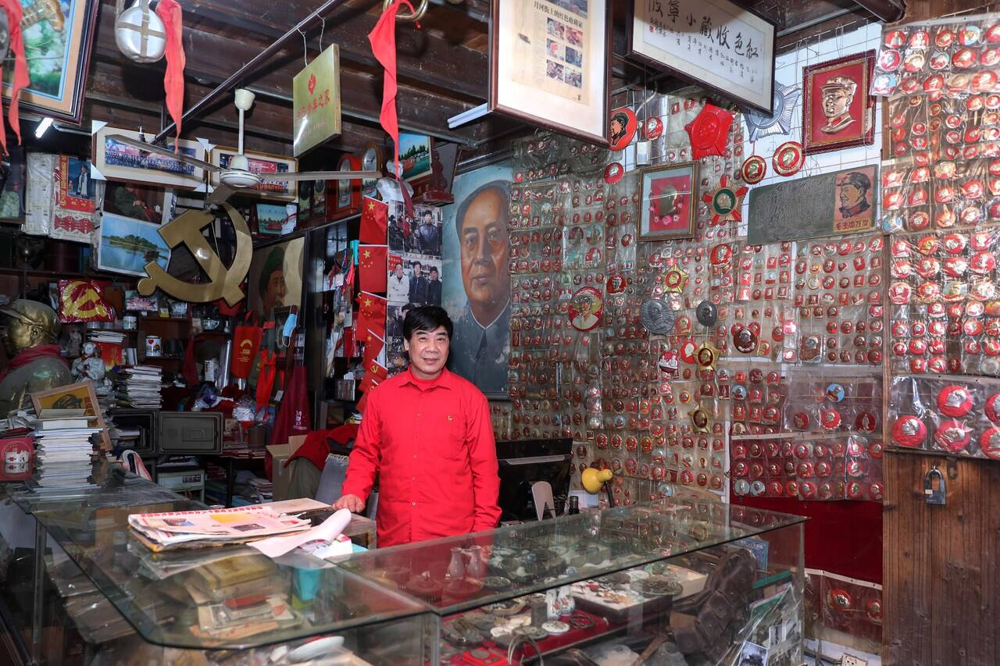
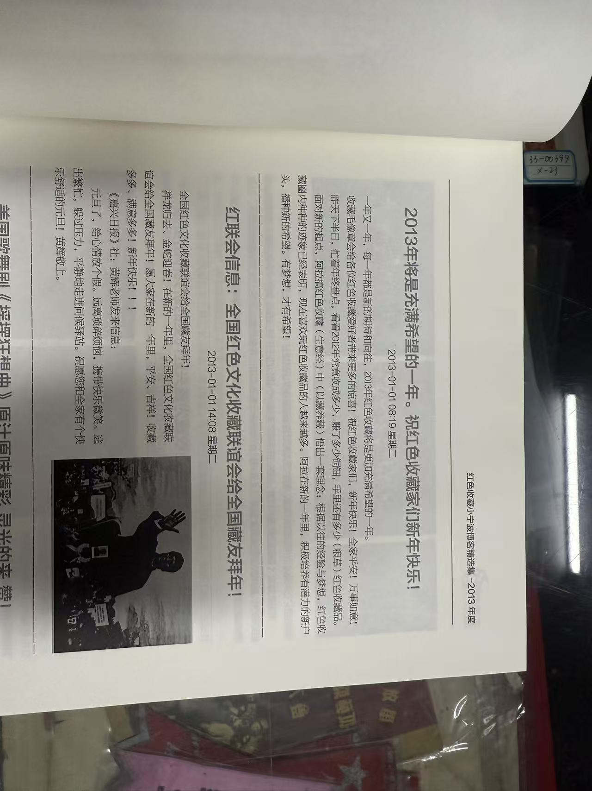
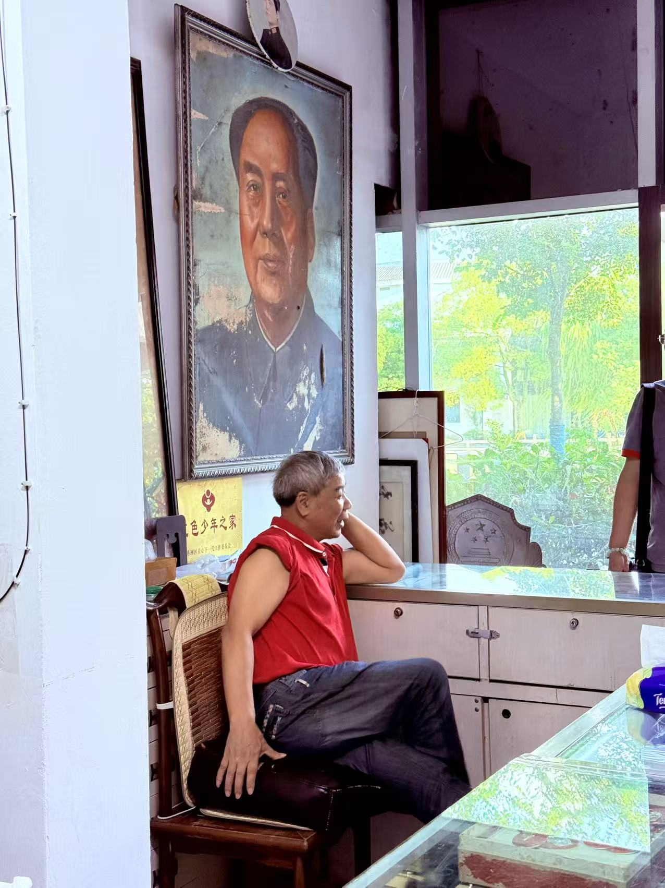
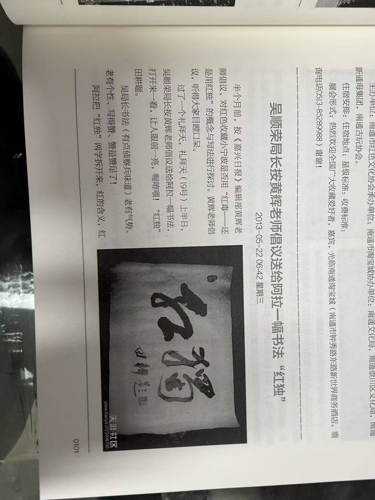
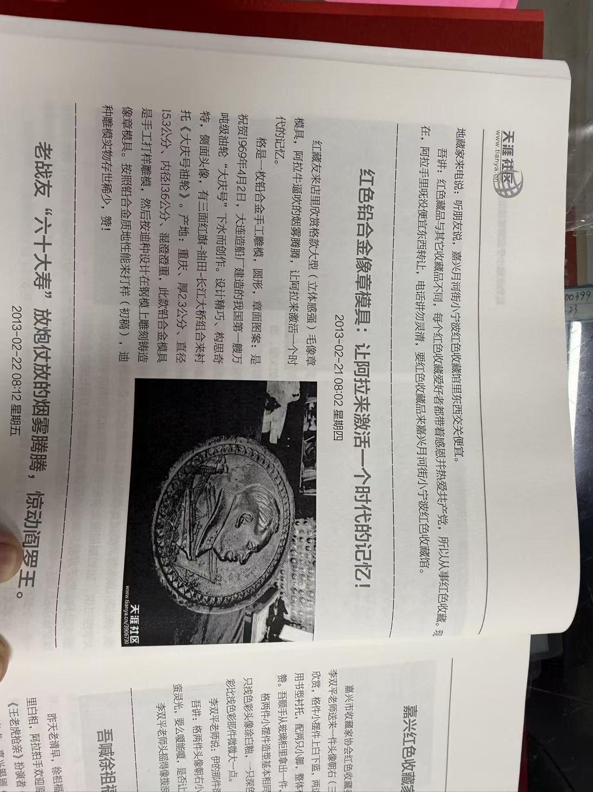
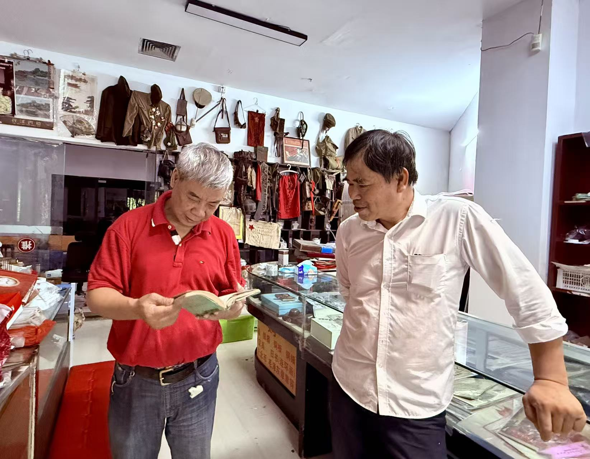

在时代的浪潮里淘沙
夏天的时候，早上六点多，星星一颗颗溶解在渐亮的天空里。以“酒吧一条街”著称的月河街经过了一夜的灯红酒绿，路旁店铺大门紧闭，巷子里回荡着环卫车碾过石板路的声音。狭窄的蒲鞋弄里，一间店铺门口，“红色收藏小宁波”的旗子已经升起，一尊毛主席的金像被摆放在石阶上，沐浴在阳光中。
今年71岁的陈连兴老师，是这间店铺的主人。从1980年收藏了第一份解放战争期间来自晋冀鲁豫的入党志愿书算起，这是他投入红色收藏的第45个年头。

1954年，陈老师出生在舟山的海风中。因为祖籍在宁波，所以被大家称为“小宁波”。1970年，浙江生产建设兵团成立。响应国家上山下乡的号召，陈老师成为了三师十一团的一名兵团战士，来到了嘉兴运河农场。
回忆知青岁月，陈老师曾经说：
“1971年至1978年，是不平静的八年，是热血沸腾的八年，是艰苦奋斗的八年，是磨砺坚强意志的八年，格八年的兵团生活，也是阿拉人生路口转折的八年。”
兵团解散后，22岁的陈连兴被分配到嘉兴钢铁厂工作。后来面向市场经济的春潮，他在勤俭路摆起集邮摊，慢慢积攒起万元户身家。我问陈老师，兵团解散后，为什么会选择留在嘉兴。
“看到的是嘉兴人的善良真诚。”
他给出了解释：
“这里和别的城市不一样，做生意不会拼到头破血流。”
几十年的时间，改变了太多人事，“现在很少回到舟山了。”
与红色收藏的缘分，扎根在童年的生活里。16岁时，陈连兴哥哥从部队里带回的主席像章，令他感到爱不释手。1980年，一份1948年的带毛泽东肖像的《入党志愿书》，让这粒种子破土而出。陈连兴花费了半个月的工资，收获了人生中第一件收藏品。
90年代，国企改制潮汹涌而来，他反而关掉店铺，专心于收藏。随后在月河街区租下门面，成立了嘉兴首家民间红色收藏馆。如今，这家店面披着四五千枚像章；他长达四十多年的收藏经历，在地图上拥有了一个锚点。
2023年5月，“七天七夜，重启天涯”的直播自救以惨败告终。1999年成立的天涯社区，最终还是消失于社会发展纷乱的脚步中。与之一同在云端消失的，还有陈老师坚持了15年的博客。始于2005年9月17日，陈连兴开始在网上发帖记录他的收藏生活，让更多人发现、了解红色收藏。
值得一提的是，陈老师并不懂拼音，因此不会打字，每一个字都一笔一划在写字板上书写下来、录入电脑。十五年，并非徒增皱纹画人老，几百多万的文字，铭刻着蒲鞋弄里收藏世界的风雨晴霁、四季三餐。
“几百多万”是因为我忘了，可能是“二百多万”，大约相当于一部《追忆似水年华》。
没有什么可以永远留存下来。

那天我前往月河街去寻找陈连兴老师。由于是下午，并且是微雨过后，街上的游人还没有那么多。我在巷子里左右找了好一阵，终于找到了蒲鞋弄的入口，却怎么也找不到记忆里那面“红色收藏小宁波”的旗子与巨大的毛主席油画像。弄堂里几乎空无一人，喧嚣声从外面的商业街上传来，两侧店铺大门紧闭，只有对面一家古玩店开着门，一个六七十多岁的老爷爷藏在柜台后面。他告诉我，那家“小宁波”已经搬走，就在几天以前。顺着他给的线索，我一路走到月河边上的芦席汇，找到了刚刚搬来的陈老师。
“这边房租便宜。”
“现在行情不好了，都赚不到钱。老早那里几家古董店，全都关门了嘛。你找哪一家问的路？经济，疫情刚开始的时候我就想到了。”
月河古街，曾经是浙北地区规模最大的文玩古玩市场，每周日的地摊集会都会吸引无数慕名而来的人来此淘宝，主路中基路上摩肩接踵、熙熙攘攘（至少我小时候还是这样）。狭小的蒲鞋弄更是卧虎藏龙。用陈老师的原话说：
“格条安静的小弄堂内有嘉兴收藏界的‘江南七怪’，伊拉走在时光里，闯江湖，见世面，多少年来，‘吃秤砣’、‘吞宝剑’、‘滚钉板’、‘跨火海’、‘老虎凳’和‘灌辣椒水’都领教过。嘉兴收藏界‘江南七怪’的传说给中国收藏界带来惊叹！”
没有什么可以永远留存下来。

所谓“江南七怪”，是对嘉兴收藏界七位武功高强、资历深厚的收藏家的合称，按照年龄排序。其中，红色收藏家小宁波是“四怪”——红痴·老顽童。下面这段文字，陈老师写于2013年，用于回应来自上海金山的红色收藏家缪时方老师的赠诗。从中，我们试图一探“红痴”之“痴”为何而来。
“红色收藏家的准则：注重的是精神财富，注重红色藏品的珍藏，并通过红色藏品的展示，教益于人，来感谢党的恩情。忽然间，哇！在阿拉的眼中，确实是一首好诗、一首红色收藏指导诗，迪就是红色收藏人：实实在在，一步一个脚印，笃悠悠的人生境界！”
陈老师的身上，有他们那一代人显著的特征。浓厚的家国情，用“感恩、敬畏、爱”来诠释。出生于1954年，与共和国几乎同龄；亲身经历国家与社会的几个发展阶段与转折，逐步树立起坚定的个人志趣；从小被“阿爹阿妈教育要懂得感恩，爱憎分明”，更生活在“互帮互助，其乐融融”的邻里氛围中；心怀老一辈知识分子的责任感，以保存、传播红色文化为使命……千丝万缕，融汇进在红色收藏小宁波收藏馆里三十多年的一言一行。
“红藏友来店里欣赏格款大型毛像章模具，阿拉牛逼吹的烟雾腾腾。让阿拉来激活一个时代的记忆！”
“喔唷喂！小宁波啊小宁波，依身穿老式军装，胸前别满像章，一出场真的吓了吾家人一大跳。小宁波真会演戏，依在《老嘉兴茶馆》面部表情与形体动作，滑稽煞！让人傻了眼，吾家人捧腹大笑，笑的招架不住差一点连饭都喷出来了。”
“神经病有多种多样，按老底子说法共有十八种。但阿拉在一群神经病中是比较善良的那一种，是有信仰的那一种：有一种精神上寄托的那一种，热爱共产党爱过头那一种，简称‘红色十三点’，红毒。”
博客已经成为历史，所幸陈老师笔耕不辍十五年的博客记录，被他极为明智地保存在光盘中，并在2020（2021）年自费编订成了一套十二册的红色大开本《红色收藏家小宁波博客精选集》。上面的只言片语，便摘自这套书中的记录。网络时代的产物，最终以古老的纸与墨的形式延长了寿命。


差不多在相同时间，2020年7月5日，陈连兴老师从一名预备党员转正，成为一名正式党员。他的第一份入党申请书上交于1974年4月11日，那是他的20岁生日，少年人意气风发，尚未摆脱青春的稚气。第二份入党申请书一直等待到2011年，时隔多年初心未改。这位“红痴”的红色理想，终于在那一天变成现实。
而四十多年中他花费无数心血收集、收藏的厚厚一沓入党申请书等，被他几次捐赠给了当地文化部门。当年他用一张生肖猴票换得一份1949年的入党申请书，11年的时候那张猴票已经升值到1.2万元。但他并不后悔。
“看到这些珍贵的档案流到外头，我总有点心疼，所以我要尽自己的力，将能碰到的搜集起来。为什么？没有共产党，没有新中国，哪有我们现在的幸福生活？我这样说，不是说大话不是说套话，而是真正发自内心的声音。”
陈老师倾尽一生坚持的几件事，这几年仿佛慢慢都迎来了一个结果。我找到他的那个下午，他正在新的店面里，和老朋友有一句没一句地闲谈。梳理老人的一生，我想象世界眼中的他，从大海走向平原，从工厂走向商铺，又再度转身，在悠长的时光里，慢慢成长为小有名气的“红痴”。
如今陈老师会使用抖音，每天拍拍生活中琐碎的细节、感恩的人或事，也许是对写博客的生活习惯的继承。视频里他的声音依旧中气很足。新店面不再处于狭窄的老弄堂，出门便是宽广明亮的大运河。河里不再有连片的漕船或悠然的画舫，戏水的年轻人驾驶汽艇一个摆尾，掀起道道白浪。陈老师举着手机，在岸边哈哈大笑。
